| Year | Exports | Imports |
|---|---|---|
| 1700 | 180 | 460 |
| 1701 | 170 | 480 |
| 1702 | 160 | 490 |
| 1703 | 150 | 500 |
| 1704 | 145 | 510 |
| 1705 | 140 | 525 |
| 1706 | 135 | 550 |
| 1707 | 125 | 565 |
| 1708 | 120 | 580 |
2 Data graphics
The statistical thinker seeks to identify patterns in data, such as possible relationships between variables. Translating a data frame into graphical form—data graphics—is an important tool for revealing or suggesting patterns.
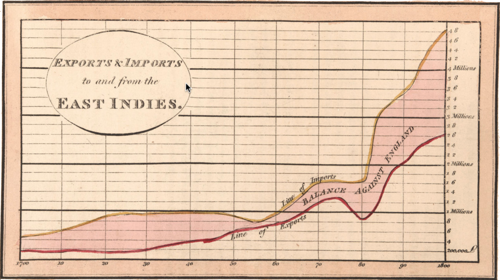
… and so on to year 1800.
Making pictures of data is a relatively modern idea. William Playfair (1759-1823) is credited as the inventor of novel graphical forms in which data values are presented graphically rather than as numbers or text. To illustrate, consider the data from the 1700s (Table tbl-playfair-trade) that Playfair turned into a picture.
Playfair’s innovation, as in Figure fig-playfair, was successful because it was powerful. A pattern that may be obscure in the data frame becomes visually apparent to the human viewer. For example, consider the graphic in Figure fig-playfair displaying data on trade between England and the East Indies in the 1700s. The graphic lets you look up the amount of trade each year, but it also shows patterns, such as the upward trend across the decades.
Data graphics can also make it easy to see deviations from trends, for instance, the dip in exports and flattening of imports during 1775-1780.
Students often encounter various types of data graphics as they progress through elementary and high school. Figure fig-textbook-graphs shows a few examples commonly found in textbooks. Remarkably, it’s rare to encounter such textbook graphic types outside of a statistics course.
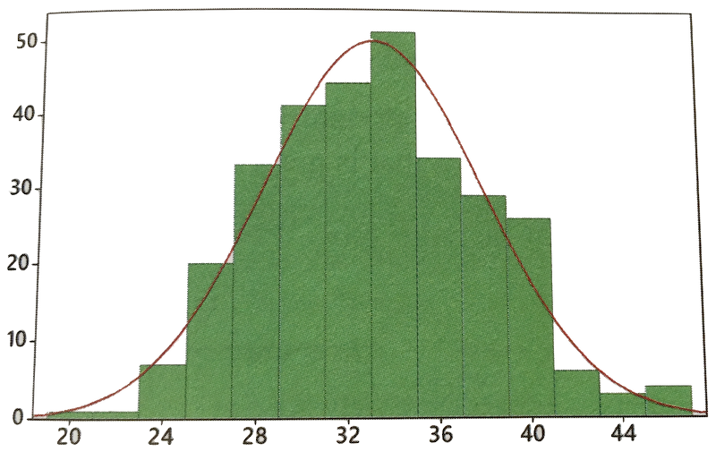
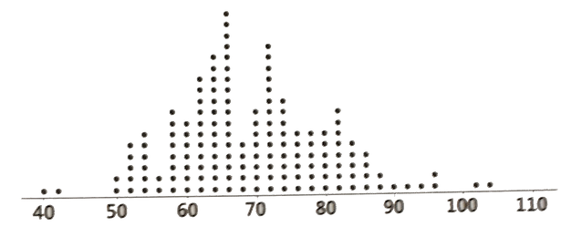
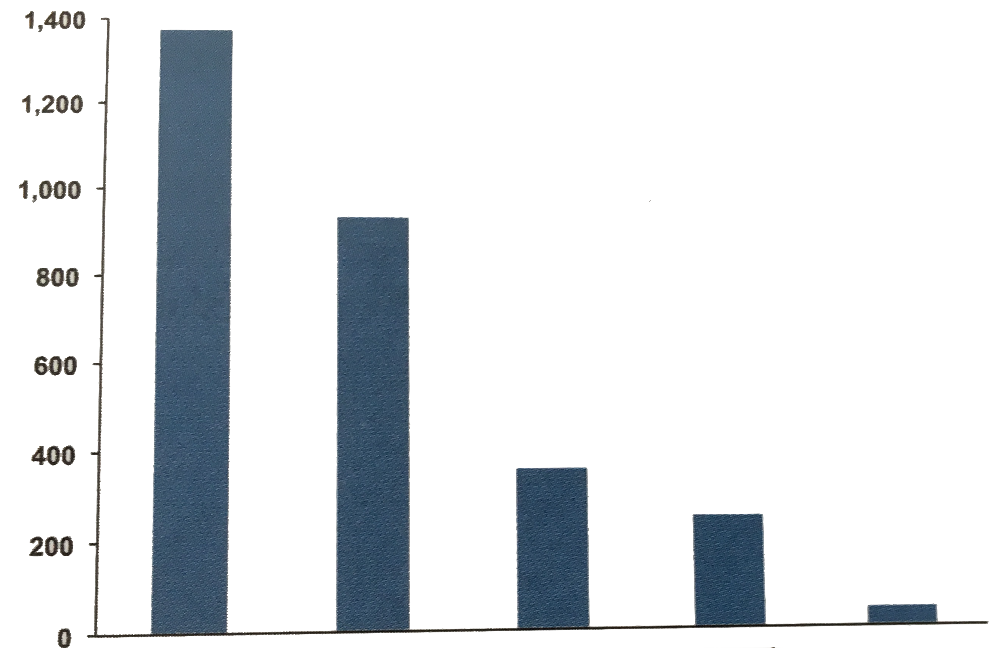
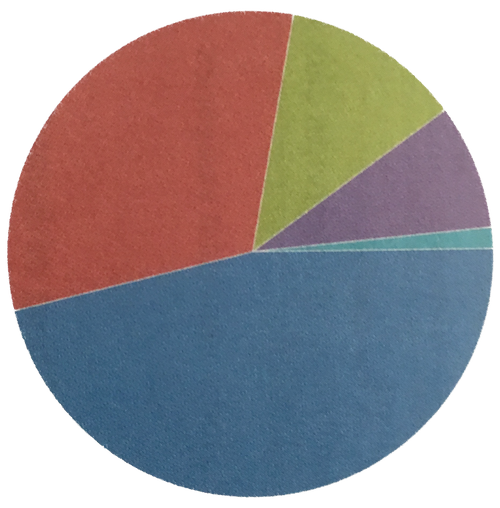
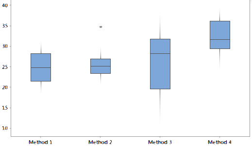
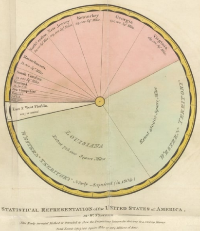
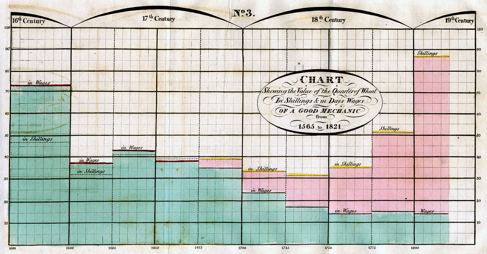
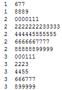
Modern data graphic designers are introducing even more variety; their graphics can be captivating, colorful, dynamic, and informative. Some online examples: how people spend their day, life expectancy, wind patterns (right now!), historical sources of death. The graphical types in Figure fig-textbook-graphs were all invented long before computers became available to help us work with data.
We won’t use such graphical variety in these Lessons. Instead, we will use a single basic form of graphic—the “annotated point plot”—capable of displaying multiple variables simultaneously and which can combine into one view both the raw data and a summary of the patterns found in the data.
Point plot
A point plot contains a simple mark—a dot—for each row of a data frame. In its most common form, a point plot displays two selected variables from the data frame. One variable is depicted as the vertical coordinate, and the other as the horizontal coordinate.
A “point plot” is also known as a “scatter plot.”
To illustrate how a point plot relates to the underlying data frame, consider Table tbl-world-cities, where the unit of observation is a city. (The data frame is available in R as maps::world.cities.)
maps::world.cities data frame
| name | country.etc | pop | lat | long | capital |
|---|---|---|---|---|---|
| Shanghai | China | 15017783 | 31.23 | 121.47 | 2 |
| Bombay | India | 12883645 | 18.96 | 72.82 | 0 |
| Karachi | Pakistan | 11969284 | 24.86 | 67.01 | 0 |
| Buenos Aires | Argentina | 11595183 | -34.61 | -58.37 | 1 |
| Delhi | India | 11215130 | 28.67 | 77.21 | 0 |
| Manila | Philippines | 10546511 | 14.62 | 120.97 | 1 |
… and so on for 10,000 cities
Since world.cities contains several variables, many possible pairs of variables could be shown in point-plot form. For instance, suppose we choose the lat and long variables, which specify each city’s location in terms of latitude and longitude. Figure fig-world-cities shows a point plot of latitude versus longitude for world cities. By convention, the word “versus” in the phrase “latitude versus longitude” marks the role of each variable in the point plot: latitude on the vertical axis and longitude on the horizontal axis.
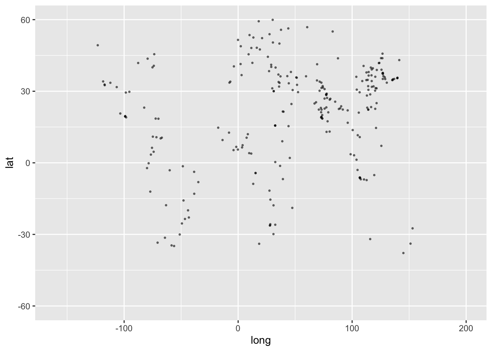
The dots in Figure fig-world-cities hint at some geographical patterns you learned about in geography class. In general, the purpose of a point plot is to hint at patterns in data.
To show how to construct a point plot, we will work with data on human body shape. The Anthro_F data frame records nineteen different measurements of body shape for each of 184 college-aged women. (See Table tbl-wrist-ankle2)
Anthro_F data frame.
| Wrist | Ankle | Knee | Height | Neck | Biceps | Waist | BFat |
|---|---|---|---|---|---|---|---|
| 18.4 | 23.5 | 37.5 | 1.6637 | 34.0 | 32.0 | 84.3 | 27.30 |
| 13.5 | 18.0 | 32.3 | 1.6002 | 27.1 | 23.2 | 60.2 | 17.62 |
| 18.0 | 22.5 | 38.5 | 1.6510 | 32.5 | 28.2 | 80.1 | 30.42 |
| 19.0 | 24.5 | 41.5 | 1.6637 | 35.0 | 34.5 | 90.0 | 34.24 |
In making a point plot of Anthro_F, we have to choose two variables to display. One variable will determine the vertical position of the dots, the other variable will set the horizontal position. For instance, in Figure fig-wrist-ankle we choose Wrist for the vertical position and Ankle for the horizontal position. In words, the plot is “wrist versus ankle,” that is, “vertical versus horizontal.” (The codebook for Anthro_F—available via the R command ? Anthro_F—tells us that Ankle is measured as the circumference in centimeters, and similarly for Wrist.)
Anthro_F |> point_plot(Wrist ~ Ankle)
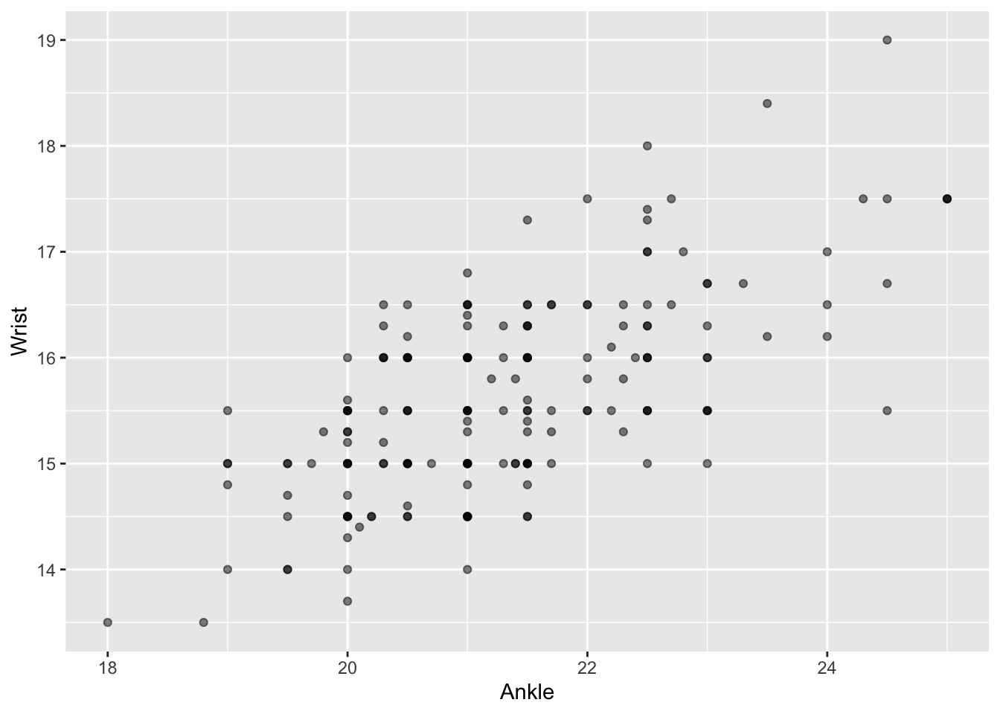
The pattern seen in Figure fig-wrist-ankle can be described as an upward-sloping cloud. We will develop more formal descriptions of such clouds in later Lessons. But for now, focus on the R command that generated the point plot.
The point of an R command is to specify what action you want the computer to take. Here, the desired action is to make a point plot based on Anthro_F using the two variables Wrist and Ankle. Look carefully at the command for Figure fig-wrist-ankle:
Anthro_F |> point_plot(Wrist ~ Ankle)
The command includes all four of the names involved in the plot:
- The data frame
Anthro_F - The action
point_plot - The variables involved:
WristandAnkle
These names are separated from one another by some punctuation marks:
|>, the “pipe”(), a pair of parentheses- , called “tilde”
Don’t be daunted by this punctuation, strange though it may seem at first. You will get used to it, since almost all the commands you use in these Lessons will have the same punctuation.
Let’s annotate the R command that made Figure fig-wrist-ankle to identify the different components of the command:
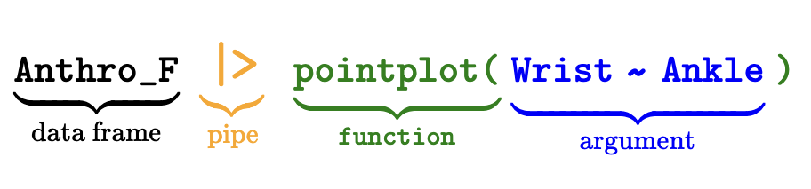
Most commands in these Lessons start with a data frame named at the start of the command. This is followed by the pipe, which indicates sending the data frame to the next command component. That next component specifies which action to take. By convention, “Function” is used rather than “action.” You use differently named functions to carry out different kinds of actions.
You will need only a handful of function for these Lessons, for instance,
point_plot, model_train, conf_interval(), mutate(), summarize().The function name is always followed by an opening parenthesis. Any details about what action to perform go between the opening and the corresponding closing parentheses. In computer terminology, such details are called “arguments.” The detail for the Figure fig-wrist-ankle point_plot is the choice of the two variables to be used and which one goes on the vertical axis. This detail is written as a “tilde expression.” The tilde expression given as the argument to point_plot() is Wrist ~ Ankle, which can be pronounced as “wrist versus ankle” or `wrist tilde ankle,” as you prefer.
Response and explanatory variables
Another pronunciation for is “… as a function of ….” So, Wrist ~ Ankle means “wrist circumference as a function of ankle circumference.” In mathematics, functions are often written using a notation like \(f(x)\). In this notation, \(x\) is the input to the function f(). The word “input” is used in so many different contexts that it’s helpful to use other technical words to highlight the context.
In computer notation, such as
f(x)orpoint_plot(Wrist ~ Knee), an expression inside the parentheses is called an argument. Inf(x), the function isf()and the argument isx. Inpoint_plot(Wrist ~ Knee), the function ispoint_plot()and the argument is the tilde expressionWrist ~ Knee.In statistics, in the word phrase “wrist circumference as a function of ankle circumference” or, equivalently, the computer expression
Wrist ~ Kneereferring to theAnthro_Fdata frame, we say thatKneeis an explanatory variable andWristis the response variable. In graphics, such as Figure fig-wrist-ankle, convention dictates that the response variable is shown along the vertical axis and the explanatory is shown along the horizontal axis.
In Figure fig-wrist-ankle, why did we choose Ankle as the explanatory variable and Wrist as the response variable for this example? No particular reason. We could equally well have chosen any of the Anthro_F variables in either role, depending on our interest. Typically, the statistical thinker will examine several different pairs to gain an understanding of how the various variables are related to one another.
Categorical variables and jittering
In the previous example, the point_plot of Wrist versus Ankle, both variables are quantitative: the respective joints’ circumference (in cm). point_plots are also suited to categorical variables. For example, Figure fig-mass-species shows a pair of point plots made from the Penguins data frame. The unit of observation is an individual penguin. The selected explanatory variable, species, is categorical. The response variable, mass, is quantitative.
Code
Penguins |> point_plot(mass ~ species, jitter = "none")
Penguins |> point_plot(mass ~ species)
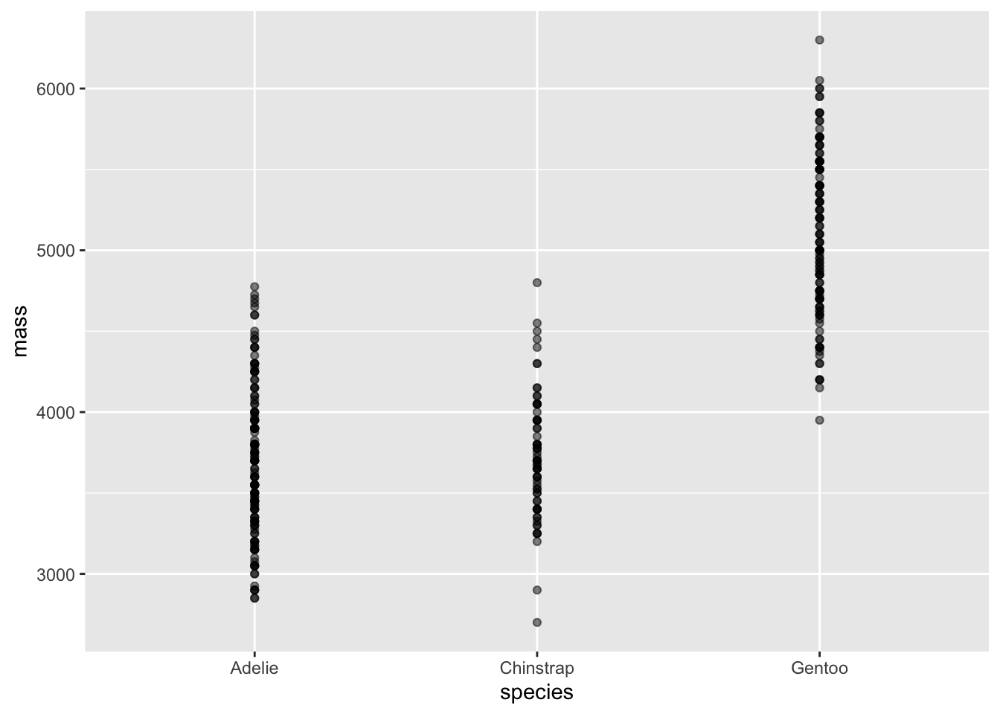
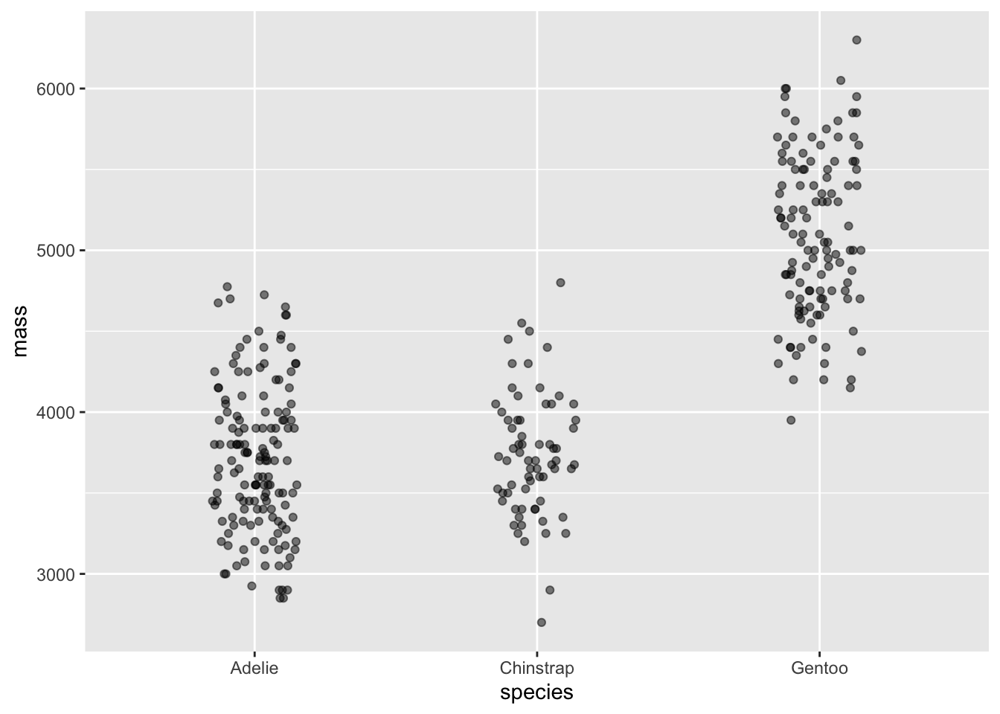
When a categorical variable is used in a plot, the positions on the axis are labelled with the levels of the variable. “Adelie,” “Chinstrap,” and “Gentoo” in the explanatory variable of Figure fig-mass-species.
When an axis represent a quantitative variable, every possible position on that axis refers to a specific value. For instance, the Adelie penguins range between 2850 and 4775 grams. On the vertical axis itself, marks are made at 3000 and 4000 grams, but we know that every position in between those marks corresponds proportionately to a specific numerical value.
In contrast, when an axis represents a categorical variable, positions are marked for each level of that variable. But positions in between marks are not referring to fictitious “levels” that do not appear in the data. For instance, the position on the horizontal axis in Figure fig-mass-species that’s halfway between Adelie and Chinstrap is not reserved for individual penguins whose species is a mixture of Adelie and Chinstrap; every value of a categorical variables is one of the levels, which are discrete. There are no such penguins! (Or, at least, the concept of “species” doesn’t admit of such.)
Using a coordinate axis to represent discrete categories makes common sense, but we are left with the issue of interpreting the space between those categories. In Figure fig-mass-species (left) the point plot has been made ignoring the space between categories. Every specimen is lined up directly above the corresponding level. The graphical result is that it’s hard to identify a single specimen since the dots are plotted on top of one another..
“Jittering” is a simple graphical technique that uses the space between the levels to spread out the dots at random, as in Figure fig-mass-species (right). This dramatically reduces overlap and facilitates seeing the individual specimens. Recognize, however, that the precise jittered position of a specimen does not carry information about that specimen. All of the specimens in the column of jittered dots above “Adelie” are the same with respect to species, even though they may have different mass.
The point_plot() function automatically uses jittering when positioning in graphical space the values of categorical variables.
Color and faceting
Often, there will be more than one explanatory variable of interest. A penguins mass might not just be a matter of species; there are bigger and smaller individuals within any species. Perhaps, for instance, the body shape—not just size—is different for the different species. One way to investigate this possibility is to display body mass as explained by both species and, say, bill_length.
To specify that there are two explanatory variables, place their both their names on the right-hand side of the tilde expression, separating the names with a + or a *. Figure fig-mass-bill-species(a) shows a point plot made with two explanatory variables.
Penguins |> point_plot(mass ~ bill_length + species)
Penguins |> point_plot(mass ~ bill_length + species + sex)
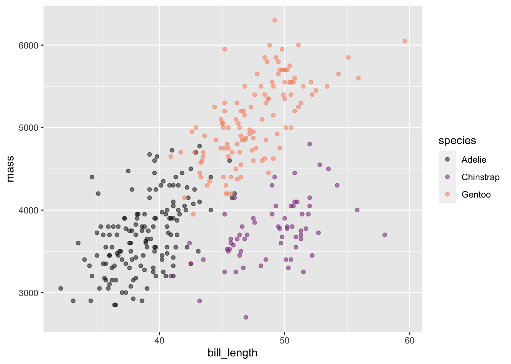
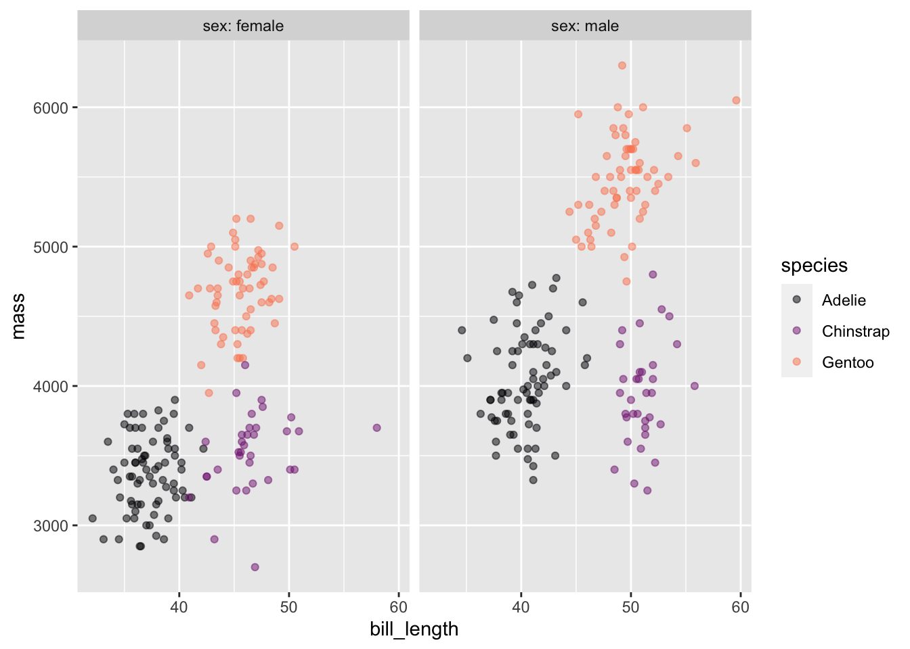
bill_length and species
Figure fig-mass-bill-species(b) involves three variables. Consequently each dot has three different graphical attributes:
- position in space along the vertical axis. This is denoted as y.
- position in space along the horizontal axis. This is denoted as x.
- color, denoted, naturally enough, as color.
In order to avoid long-winded sentences involving phrases like “the horizontal axis represents ….” we use the word “mapped. For instance, in Figure fig-mass-bill-species, mass is mapped to y, bill_length is mapped to x, and species is mapped to color. Each mapping has a scale that translates the graphical property to a numerical or, in the case of color, categorical value.
point_plot() has been arranged so that the order of variable names in the tilde expression argument, mass ~ bill_length + species, exactly determines the mappings of variables to graphical properties. The response variable—that is, the variable named on the left-hand side of the tilde expression—is always mapped to y. The first variable on the right-hand side—bill_length in Figure fig-mass-bill-species—is always mapped to x. The second variable named on the right-hand side is always mapped to color.
In Figure fig-mass-bill-species(right), four variables are shown: the response mass as well as the three explanatory variables bill_length, species, and sex. Each variable needs to be mapped to a unique graphical property. point_plot() maps the third explanatory variable (if any) to a property called “facet.” Facets are drawn as separate sub-panels. The scale for the mapping to facet consists of the labels at the top of each facet.
With point_plot(), different but closely related graphs of the same data can be made by swapping the order of variables named in the tilde expression. To illustrate, Figure fig-mass-bill-species-sex2 reverses the mappings sex and species compared to Figure fig-mass-bill-species(b). The data are the same in the two plots, but the different orderings of explanatory variables emphasize different aspects of the relationship among the variables. For instance, in Figure fig-mass-bill-species-sex(b) it’s easier to see that the sexes of each species differ in both mass and bill length. Chinstrap males and females have bill lengths that are the most distinct from one another.
Penguins |> point_plot(mass ~ bill_length + sex + species)
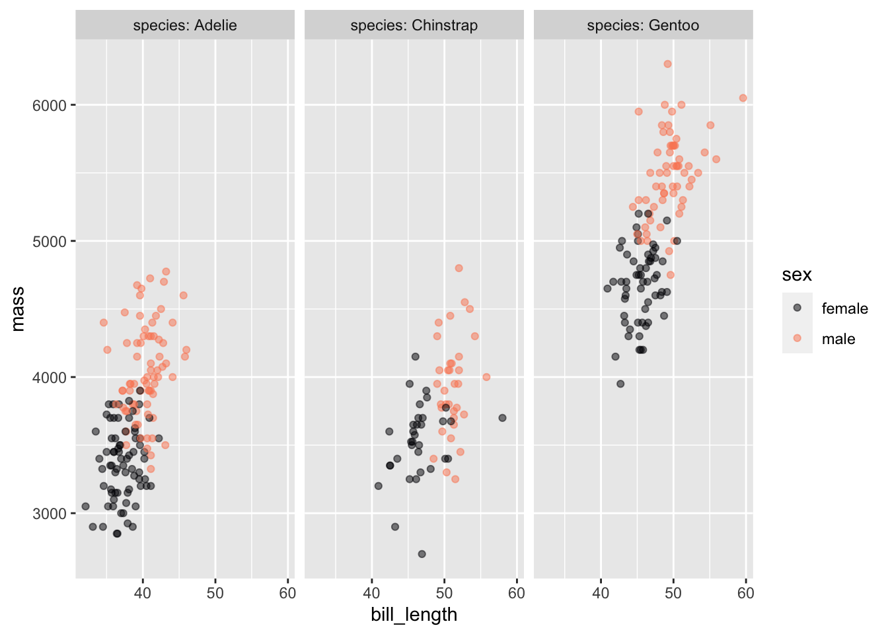
sex mapped to color and species mapped to facet. This changes the visual impression created.
Graphical annotations
We can enhance our interpretion of patterns in the dots of a point plot by adding “notes” to the graphic, in other words, “annotating” the graphic. Lessons sec-variation-and-distribution and sec-model-annotation introduce different formats of statistical annotations that highlight different features of the data.
Here, to illustrate what we mean by a graphical annotation, we will use a familiar non-statistical annotation. Figure fig-cities-with-continents replots the locations of world cities with an annotation showing continents and islands.
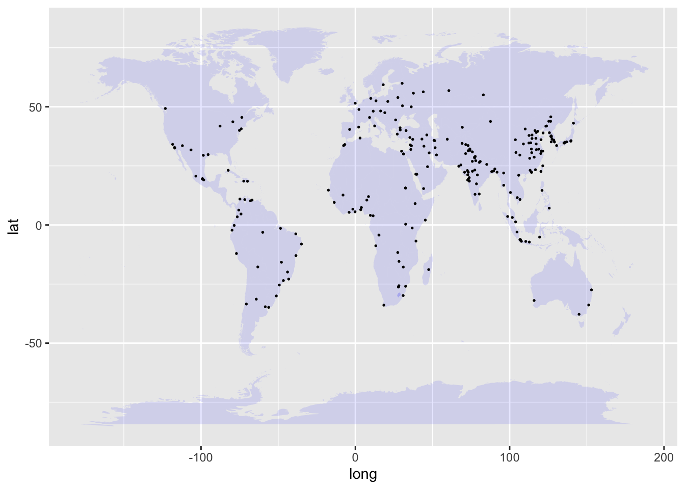
Data shown without an annotation (Figure fig-world-cities) may suggest a pattern. Adding an appropriate annotation enables you to judge the existence with the intuited pattern with much more confidence or, conversely, reject the pattern as a cloud-like illusion.
Exercises
Exercise 2.1 Q02-098
Write out the R commands to make these graphics, based on the Whickham data frame.
Graph A
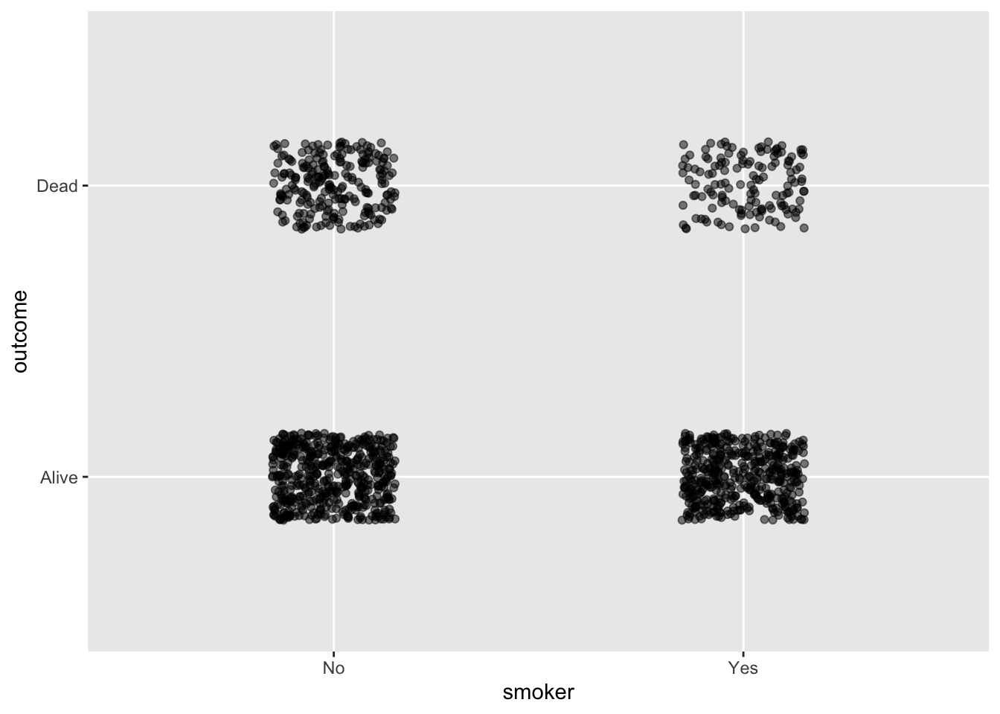
Answer: Whickham |> point_plot(outcome ~ smoker)
Graph B
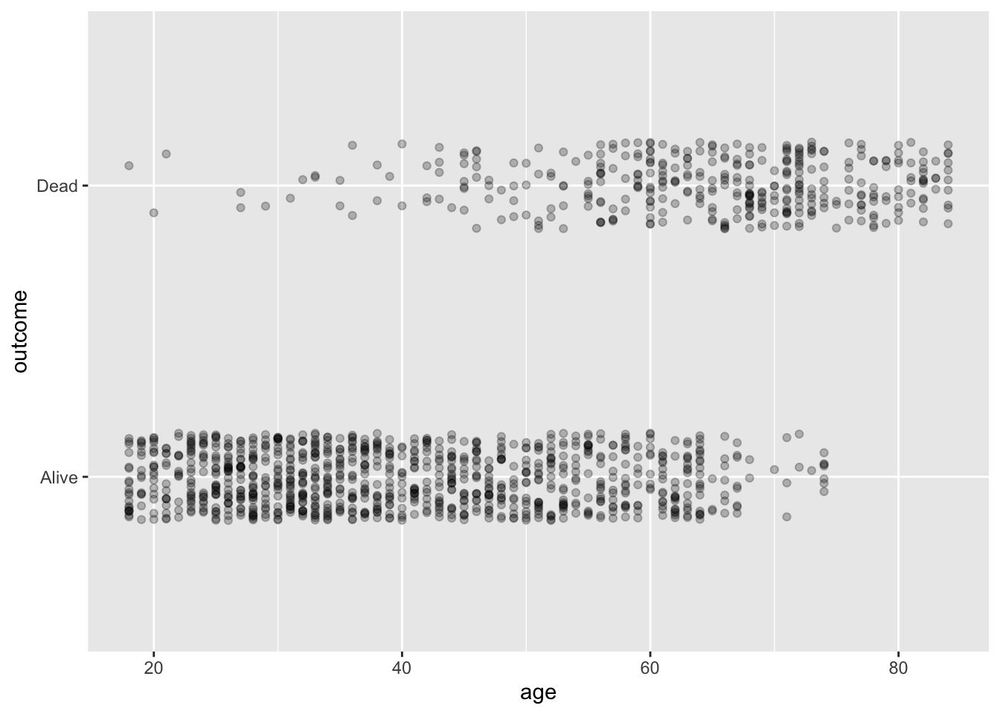
Answer: Whickham |> point_plot(outcome ~ age)
Graph C
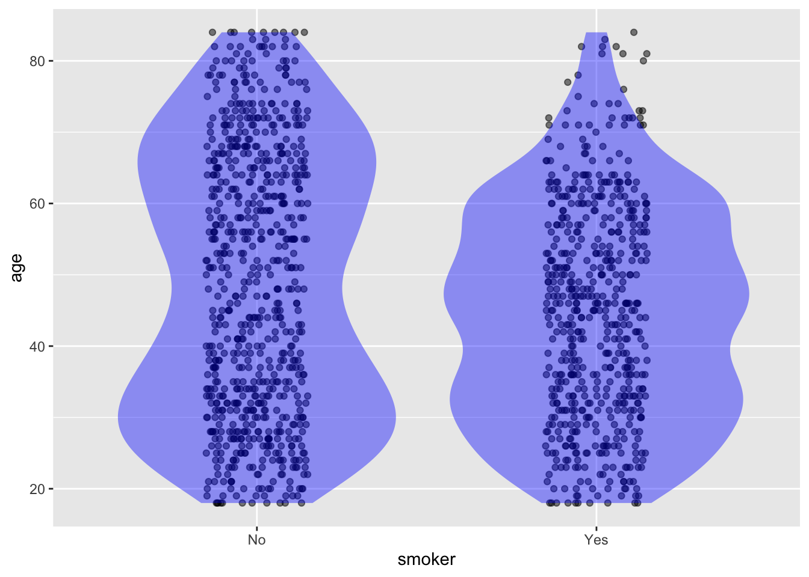
Answer: Whickham |> point_plot(age ~ smoker
Exercise 2.2 Q02-099
Consider the following point plots, all made from the same data frame. The unit of observation is an antique grandfather clock sold at auction.
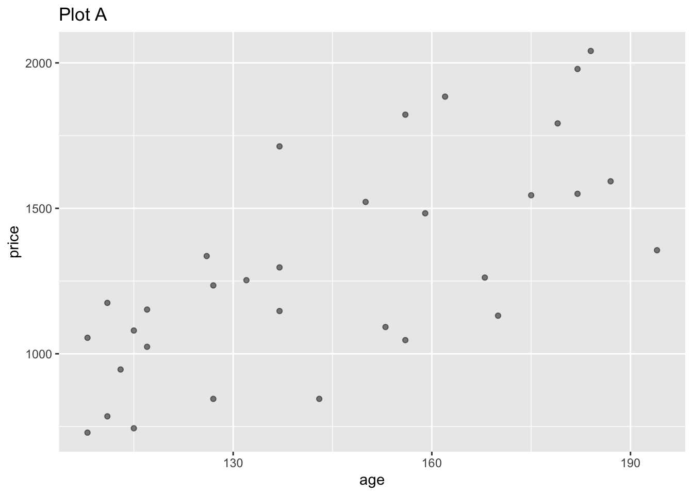
How many rows are their in the data frame? Answer: There is one dot for each row. Counting the dots gives 32.
Which variable is mapped to y? Which to x? Answer:
priceis mapped to y,ageto x.Which is the response variable? Answer:
price. You can tell because the response variable is always mapped to y.For each variable, say whether it is quantitative or categorical? Answer: Both
ageandpriceare quantitative.
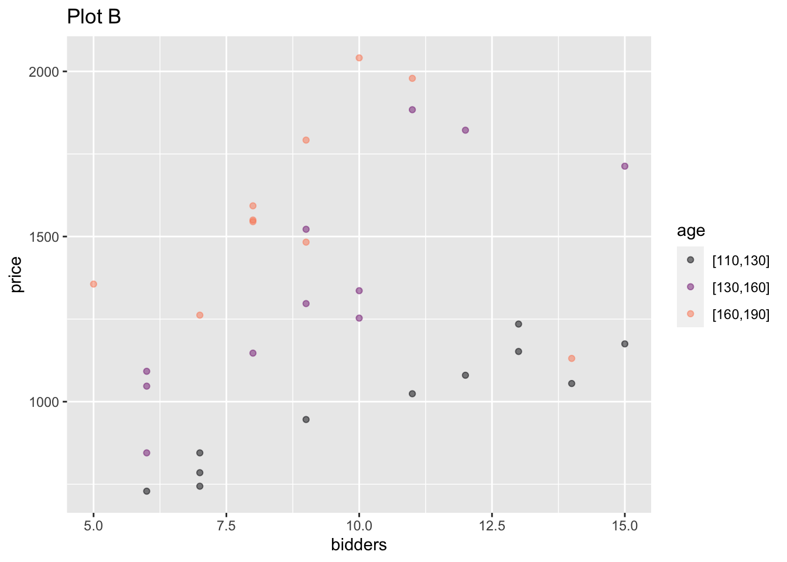
In Plot B, how many explanatory variables are there? What are their names? Answer: The two explanatory variables are
ageandbidders.Which variable is mapped to x? Which to color? Answer:
biddersis mapped to x,ageto color.From Plot A we could see that
ageis quantitative. (It’s the age of each of the clock.) But in Plot B, the color scale is divided into three categories? What are the names of the levels of the color categories? Answer: The names are “[110-130]”, “[130-160]”, and “[160 to 190”]The
point_plot()function was written so that when a quantitative variable is mapped to color, the variable is displayed broken up into categories, each of which covers a range of numerical values, such as 110-130. that the ranges are selected bypoint_plot()to place roughly equal numbers of specimens in each category. What feature of Plot B supports the claim? Answer: There are roughly equal numbers of specimens drawn in each of the colors.
Exercise 2.3 Q02-100
Group activity: Each dot in Figure fig-wrist-ankle reflects one row of the Anthro_F data frame and is placed at coordinate (Ankle, Wrist). Here are three rows selected from Anthro_F.
| Waist | Height | Wrist | Knee | Ankle |
|---|---|---|---|---|
| 70.0 | 1.6256 | 16.0 | 37.0 | 20.0 |
| 65.5 | 1.6002 | 14.5 | 34.2 | 20.2 |
| 76.0 | 1.8034 | 17.5 | 38.2 | 25.0 |
Locate the four corresponding dots in the Figure fig-wrist-ankle point plot.
Exercise 2.4 Q02-101
What is the pattern shown by the dots when you make this point_plot?
Anthro_F |> point_plot(Forearm ~ Height)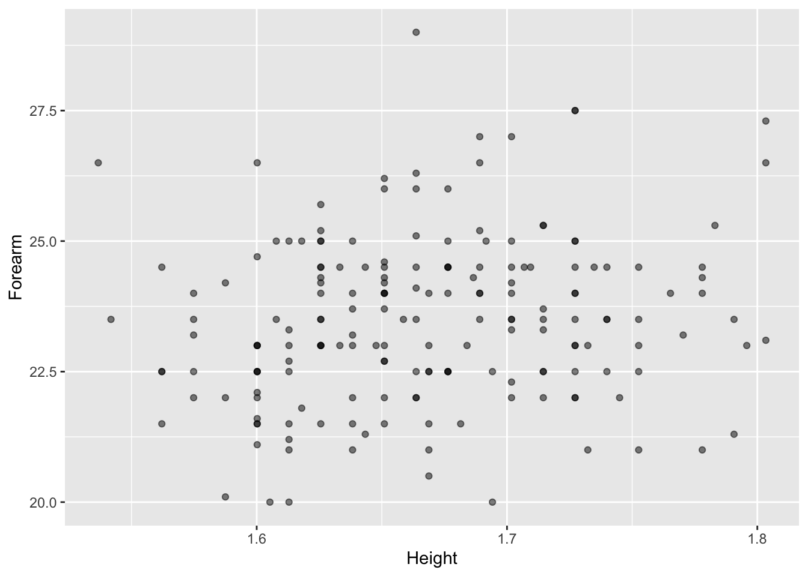
Answer: Rather than a sloping cloud of points as in Figure fig-wrist-ankle, the cloud here has no slope.
Exercise 2.5 Q02-102
Consider these two point plots, both constructed from 200 rows sampled from the Whickham data frame. (Note: When you know the name of the data frame, it’s sensible to look up the codebook/documentation for the frame using the command ?Whickham.)
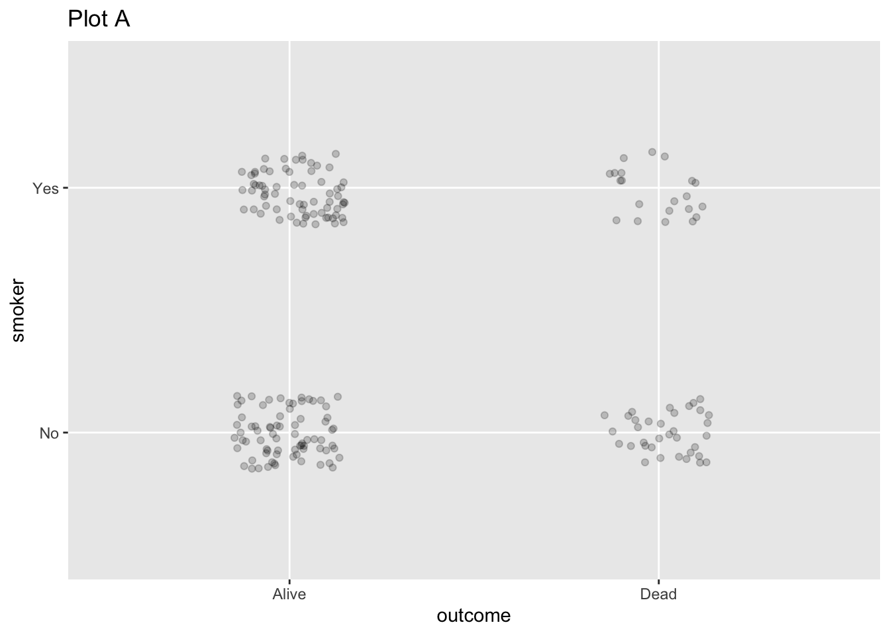
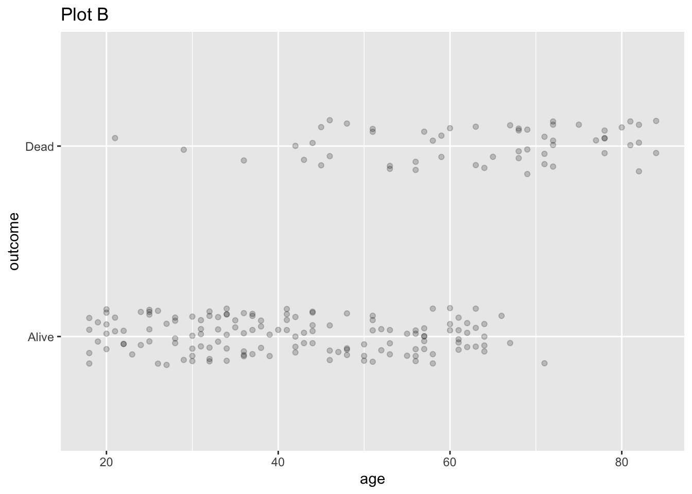
In Plot A, there are four clumps of dots. What about the variables being mapped to x and y is responsible for creating the four clumps. Answer: Both variables,
smokerandoutcomeare categorical, thereforepoint_plot()uses jittering to display them. Each variable happens to have two levels, so there are four different combinations of the values ofsmokerandoutcome. Hence, four clumps.In Plot A, the clump on the upper right includes the fewest specimens. What do all the specimens in that clump have in common? Answer: All of them were smokers who had died by the time of the follow-survey.
In Plot B, there are two bands of dots. What about the variables involved produces this pattern? Answer: The
outcomevariable, mapped to y, is categorical, so jittering is used to place the dots.outcomehas two levels, leading to the dots being broken up into two groups along y. Butageis quantitative, and the specimens are broadly spread from ages 20 to 80. So the dots in each of theoutcomegroups gets spread out along x.Plot B shows an association between
ageand andoutcomethat reflects a well known feature of human mortality. What is that feature? Answer:outcomerecords whether the person, interviewed in the 1970s, had died by the time of a 20-year follow-up survey. As a rule, older people are more likely to die in the next 20 years.Plot A does not hint at the association seen in Plot B. Give the simple reason why. Answer: Plot A does not display
age.
Exercise 2.6 Q02-103
In each of the instances below, you are given the name of a data frame and a graph displaying the data frame. Your task is to construct the R command to duplicate the given graph.
A. FEV
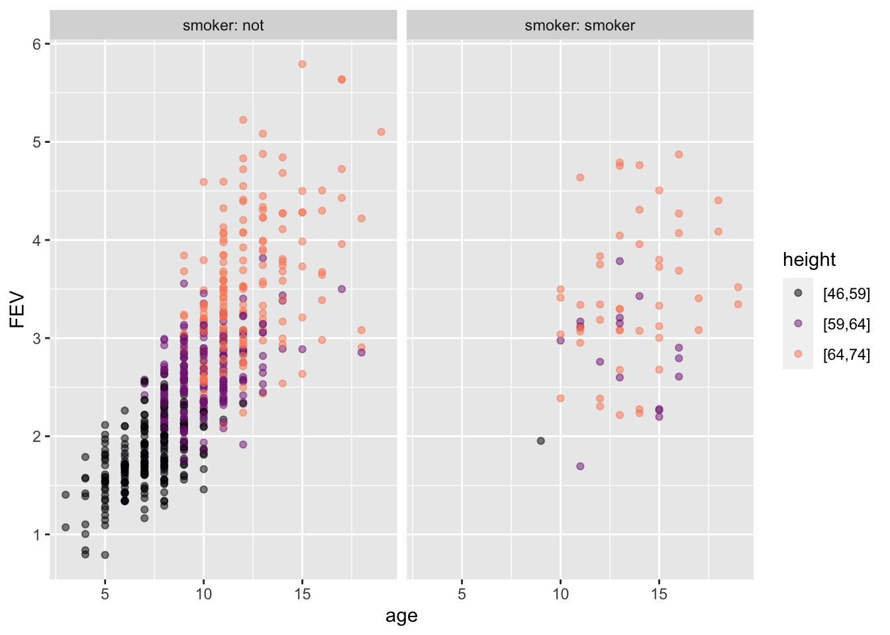
B. Birdkeepers
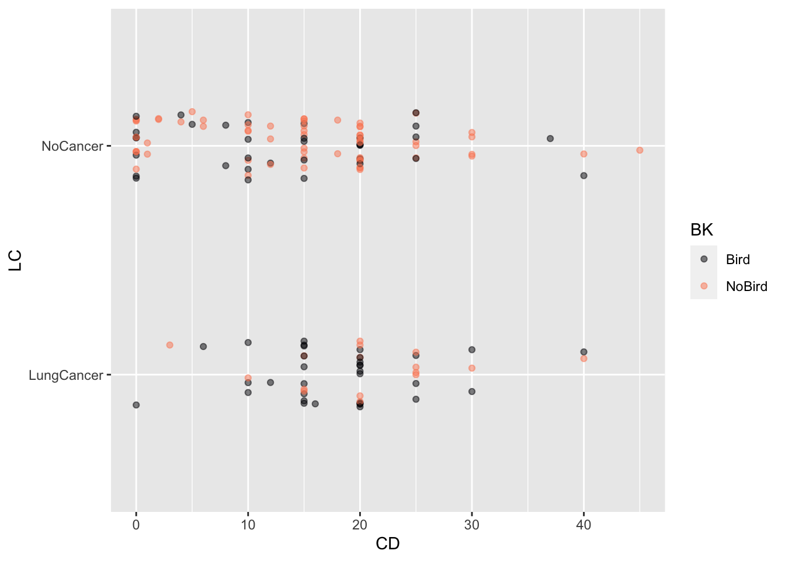
C. Wheat
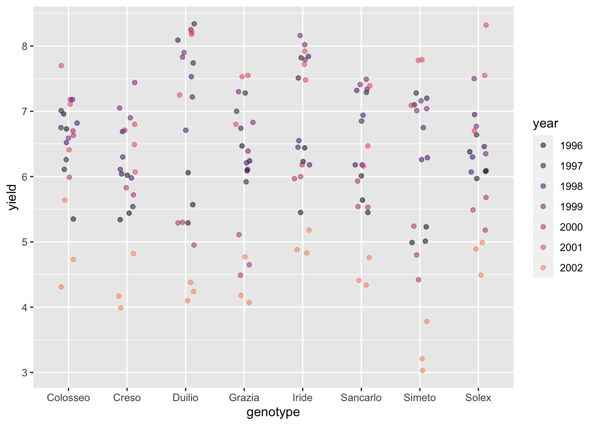
Exercise 2.7 Q02-104
Here’s a point_plot() variable mapping that you would never see in practice, but which may help you better understand the use of color and facets.
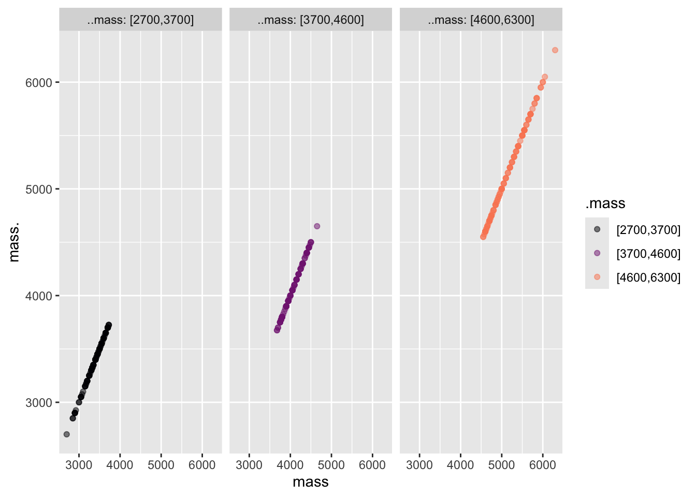
Explain why the graph consists of lines of dots in different locations and different colors in each of the panels. Answer: The variable mass is being mapped to all four graphical properties: x, y, color, and facet. Since each dot has the same x and y coordinate, the dots all appear on the same diagonal line in each facet. Likewise, each facet corresponds to one color.
Exercise 2.8 goldfish-teach-ring
The graphic below contains a single data layer. Four of the data points are annotated with letters in order to identify them specifically.
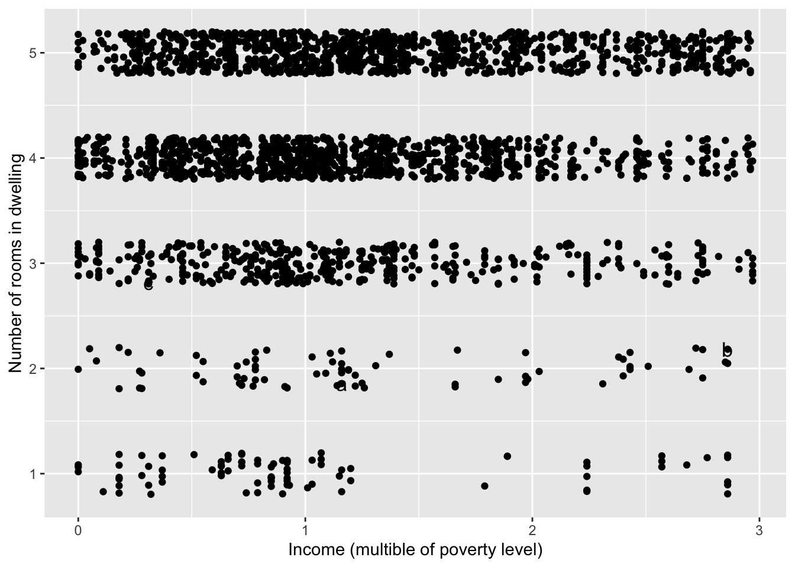
Part 1
- Is the income level of “a” greater than “b”? Answer: no
- Is the income level of “d” greater than “a”? Answer: no
- Is the number of rooms greater for “b” than for “a”? Answer: no. Even though the vertical position of “b” is higher than for “a,” they are in the same jittering band. All points within a jittering band have the equivalent value in terms of the variable that is being jittered.
- Is the number of rooms greater for “c” than for “a”? Answer: yes. They are in different jittering bands.
Part 2
Here is the data plotted in the figure.
| row | income | number_of_rooms |
|---|---|---|
| 1 | 0.90 | 1 |
| 2 | 1.00 | 3 |
| 3 | 0.31 | 3 |
| 4 | 0.85 | 1 |
| 5 | 1.09 | 3 |
| 6 | 1.19 | 2 |
| 7 | 1.01 | 1 |
| 8 | 1.09 | 3 |
| 9 | 1.16 | 2 |
| 10 | 2.86 | 2 |
The points a, b, c, and d, are shown in the table. For each of a, b, c, d, say which row corresponds to the point. Answer: a is row 8, b is row 7, c is row 2, d is row 1
Exercise 2.9 fly-ring-rug
With reference to the graphics frame shown below, indicate whether the variable on each axis is quantitative or categorical.
- Horizontal axis: quantitative or categorical Answer: categorical
- Vertical axis: quantitative or categorical Answer: quantitative
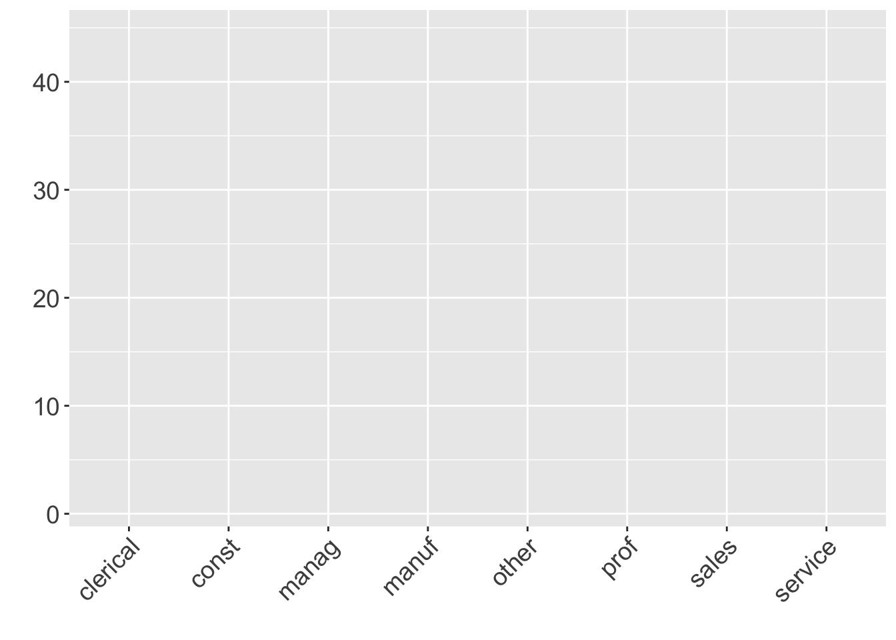
Exercise 2.10 wolf-take-vase
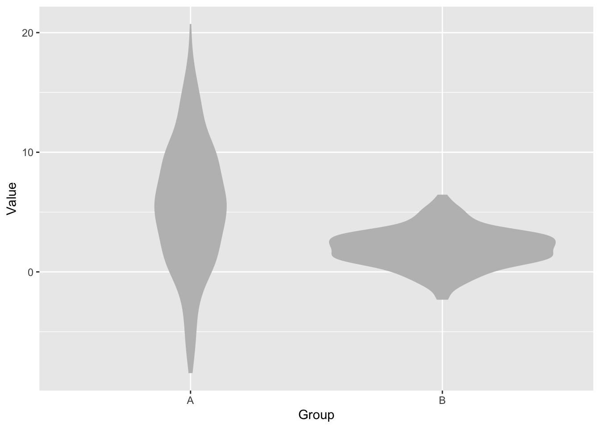
Based on the graphic above—which violates our convention of putting statistical annotations on top of the raw data—which group, A or B, has the larger number of instances in the data? Select one
- Group A has more instances.
- Group B has more instances.
- The two groups have about the same number of instances.
- Violin plots don’t show this information. Answer: Right
Answer:
All of the violins shown in a given plot will have the same area regardless of the number of points for the group being represented. If the values are spread out (e.g. low density) the violin will be narrow, if they are clumped together (e.g. high density) the violin will be relatively wide. But in comparing two violins, there’s no way to say how many data points fall into each of them.
This is one of the reasons why it’s good to show the raw data along with the statistical annotations.
Exercise 2.11 dolphin-wear-table
Consider this data frame:
| HealthGen | Age | SleepHrsNight |
|---|---|---|
| Vgood | 28 | 9 |
| Vgood | 27 | 8 |
| Vgood | 17 | 6 |
| Good | 43 | 7 |
| Good | 27 | 6 |
| Excellent | 36 | 8 |
| Good | 29 | 6 |
| Good | 80 | 6 |
| Excellent | 22 | 8 |
| Good | 54 | 7 |
Here is a plot of the data. The identifying labels have been stripped off for the purpose of this exercise.
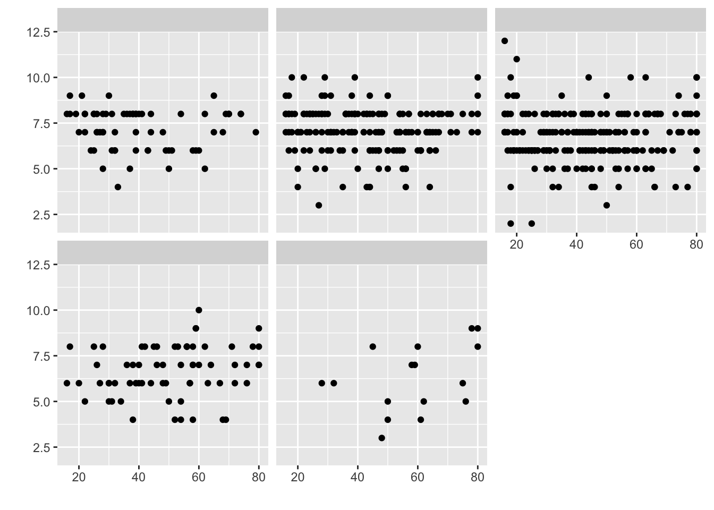
- What is the variable used for facetting? Answer: General health
- What is the variable on the horizontal axis? Answer: Age
- Is this plot jittered? Answer: No. Notice that the values of
SleepHrsNightare discrete integers: 7, 8, 9 and so on. The data rows with each value ofSleepHrsNightare all plotted at the same vertical positioning. If there were jittering, points with the same value ofSleepHrsNightwould be spread somewhat in the vertical direction.
Exercise 2.12 hamster-dive-stove
The LSTbook::Butterfly data frame records world records in the 100- and 200-meter butterfly swimming competition.
Using
tilde_plot(), make a graphic that tells an informative story about what world records depend on. When you have a graphic that you like, write a short narrative that guides a human reader through what is revealed by the graphic.The races cover different total distances (100 and 200 meters) but a given distance might be divided into multiple “lengths” according to the size of the pool. Make a graphic that shows clearly what is the effect of having to turn around at the end of each length in order to complete the total distance.
Exercise 2.13 fir-become-painting
The SDSdata::FARS data table contains statistics on motor-vehicle related fatalities each year in the US. The plot shows crashes ~ year.
- For data where there is a time sequence to the points, it can be helpful to guide the eye by connecting successive points with a line. You can do this by piping the output of
point_plot()into thegf_line()function. Like this:
FARS |> point_plot(crashes ~ year) |>
gf_line(crashes ~ year)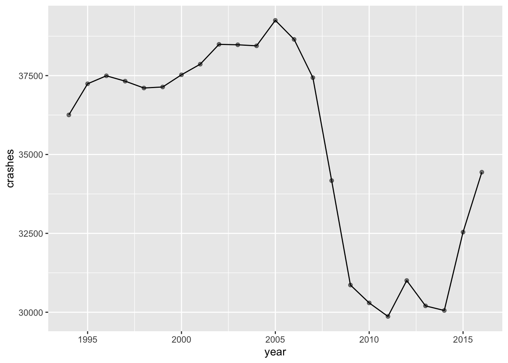
Read the graphic. What is the numerical size of the drop from the year with the highest number of crashes to the year with the lowest number of crashes? Answer: about 10000 crashes.
There is a dramatic fall in the number of crashes between 2005 and 2010. But how dramatic? For variables where zero is a meaningful value, as with
crashes, it can be helpful to include zero on the y-axis. This helps the eye to see not just the change in numbers but the size of that change in proportion to the hold. You can set the scale of the y-axis by adding another function call to the graphing sequence:gf_lims(y = c(0, 40000)). Make such a graph.
Answer:
SDSdata::FARS |> point_plot(crashes ~ year) |>
gf_line(crashes ~ year) |>
gf_lims(y = c(0, 40000))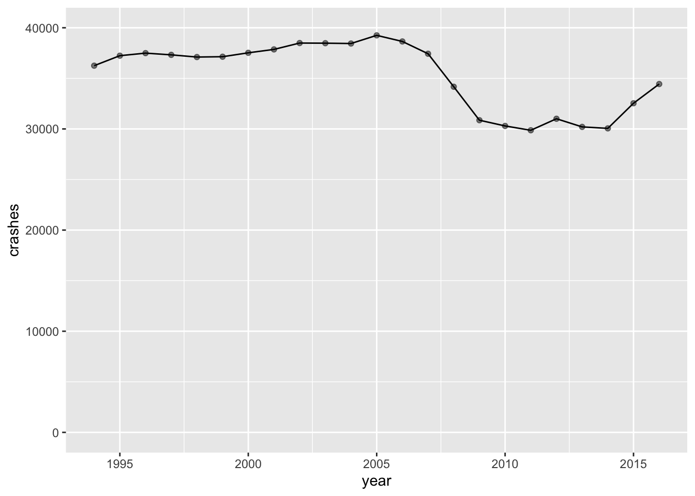
Another, more convenient way to create a similar graph is to use gf_lims(y = c(0, NA)). Here, the NA is an instruction to the computer to figure out what the top limit should be automatically.
From the graph with a y-axis starting at zero, estimate the proportional change in the number of crashes from the highest value to the lowest value. Answer: a reduction of about 25%
The graphical technique of connecting successive dots with lines is appropriate only when there is a natural meaning to “successive.” In other circumstances, the lines will have a bizarre appearance.
Penguins |> point_plot(mass ~ bill_length) |>
gf_line(mass ~ bill_length)
Keeping in mind that each dot is an individual penguin, is there any graphical meaning to connecting two penguins with a line?
Exercise 2.14 Q02-105
Here are two point plots that differ only in the way the explanatory variables are mapped to graphical properties.
Galton |> point_plot(height ~ mother + sex)
Galton |> point_plot(height ~ sex + mother)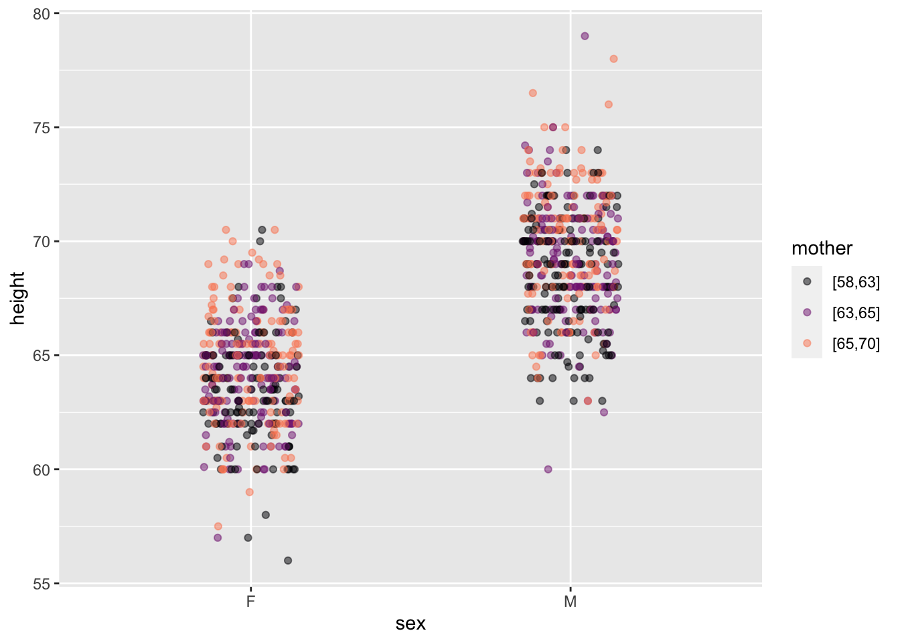
In the plot that maps
motherto x, explain how you would identify a child who is relatively short for their sex but who has a tall mother.In the plot that maps
motherto color, explain how you would identify a child who, as in (1), is relatively short for their sex but has a tall mother.
Exercise 2.15 Q02-106
The “body mass index” (BMI) is a familiar way of defining overweight. (Whether it is useful medically is controversial, but it is widely used.) BMI is an arithmetic combination of height and weight. Using the data in Anthro_F, make plots showing the relationship between BMI, Height, and Weight. There are six different ways of defining the graphics frame from three variables, e.g., Height ~ BMI + Weight or Weight ~ Height + BMI.
Three of the six possible frames just swap the x- and y-axes from the other three. Make a list of the three pairs of swapped axis graphics frames.
Select one frame from each of the three pairs in (a) and graph it, producing three graphs.
Pick one of the three graphs from (b)—whichever you like best—and use it to explain in graphical, everyday terms, how BMI is related to height and weight.
Exercise 2.16 Q02-107
The Births2022 data frame records a random sample of 20,000 births in the US in 2022. Two of the variables, meduc and feduc, give the educational level of the mother and father respectively. The levels of these categorical variables correspond to “eighth grade or less”, “twelfth grade or less”, “high-school graduate,” “high-school graduate plus some college (but no degree),”associate’s degree,” “bachelor’s degree,” “master’s degree,” and “professional degree” (such as a PhD, EdD, MD, LLB, DDS, JD). Educational data is missing (“NA”) for about 5% of mothers and 15% of fathers.
The graph is a point plot of the mother’s education level versus the father’s.
ggplot(Births2022, aes(y=meduc, x=feduc)) +
geom_jitter(point_ink = 0.05, size=0.02, height=0.4, width=0.4) +
theme_bw() +
theme(aspect.ratio=1, axis.text.x =
element_text(angle = 45, vjust=0.9, hjust=1)) +
labs(x="Father's education", y="Mother's education") Warning in geom_jitter(point_ink = 0.05, size = 0.02, height = 0.4, width =
0.4): Ignoring unknown parameters: `point_ink`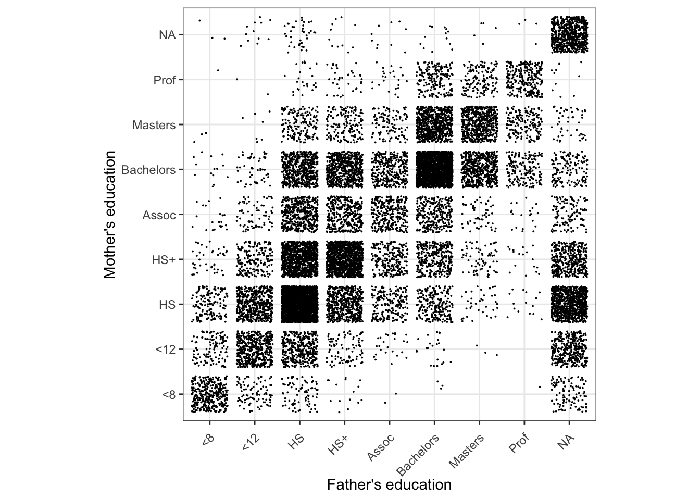
- Is this a jittered point plot? Explain briefly how you can tell. Answer: Yes, it’s jittered both horizontally and vertically. The axis tick marks correspond to discrete categorical levels, but the points themselves are spread out a little bit around the discrete levels.
- Is transparency used? Explain briefly how you can tell. Answer: Yes. In the blocks with a low number of points, each dot is not a solid color.
- In principle, there are 9 \(\times\) 9 = 81 possible combinations of the mother’s and father’s education. Which combination is the most common? What’s the second most common combination? Answer: Most common: HS for both mother and father. Second most common: Bachelors for both mother and father.
- Is it more common for a woman with a Bachelor’s degree to marry a man with a high-school degree or vice versa? Answer: The square at mother=bachelors, father=HS is much darker than the similar square on the other side of the diagonal, that is, at father=bachelors, mother=HS
- What would the graphic look like if jittering had not been used? Answer: There would be a single dot at each of the populated intersections, rather than the square cloud of dots seen in the actual graph.